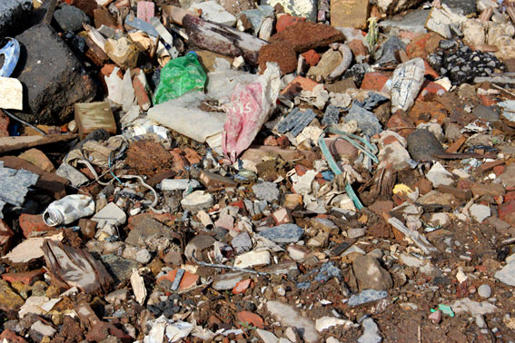
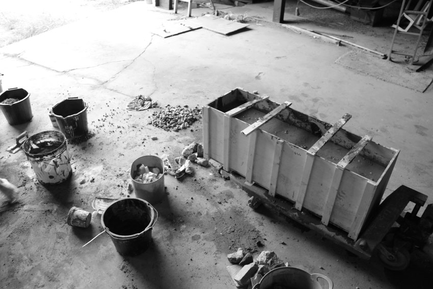
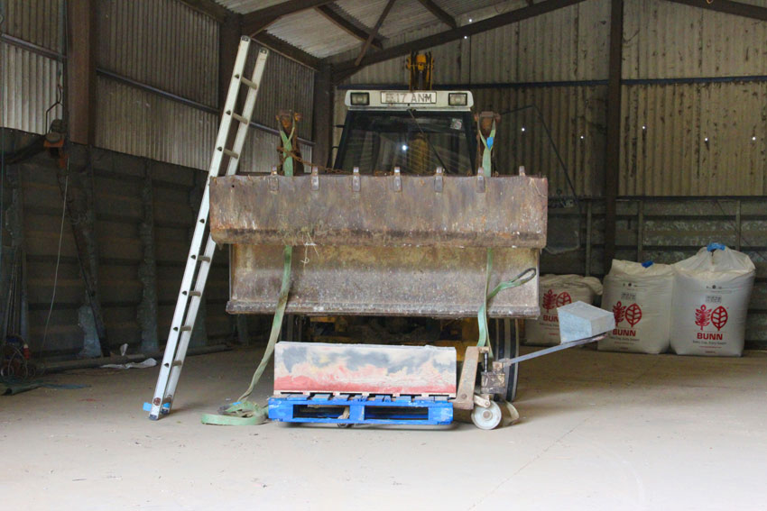
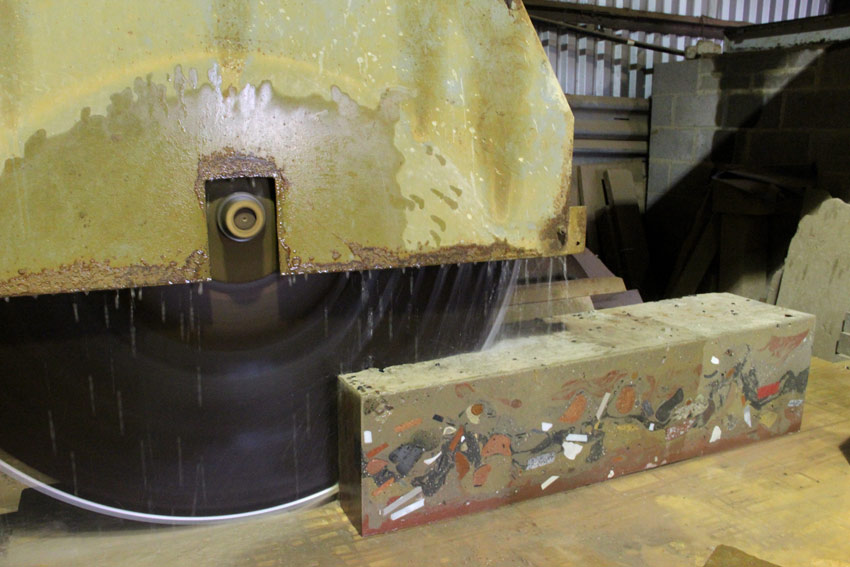
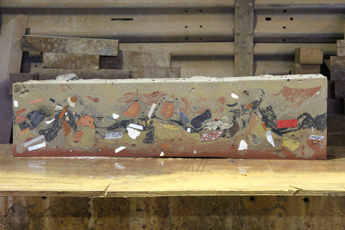
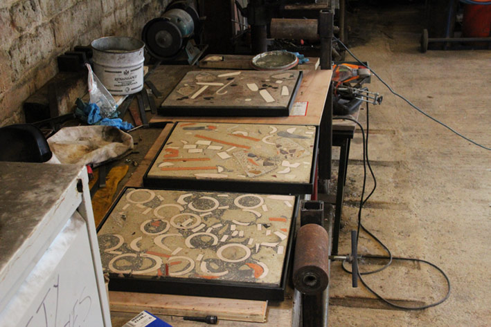
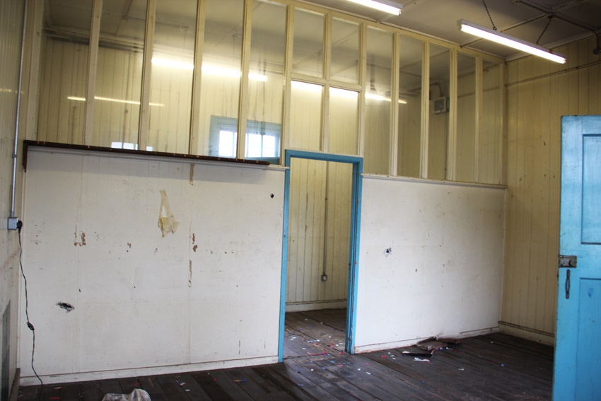
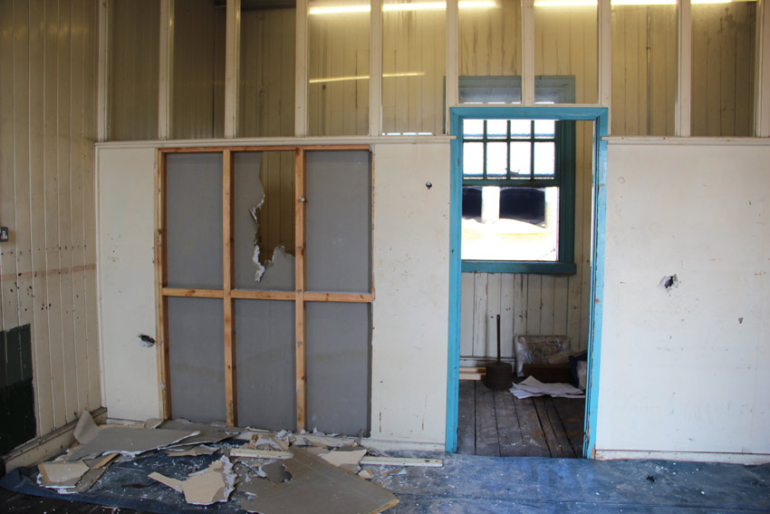
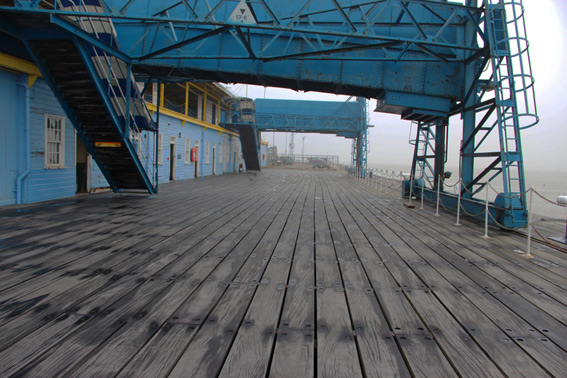

Research/Process
Material for the work was sourced from several locations along the Thames Estuary including: a historic landfill site close to Coalhouse Fort, Mucking landfill, East Beach and Wakering Stairs in Shoeburyness. The following images show the process of making and installing the concrete slabs.
Carboniferous
This project was a response to the geology archive at Wolverhampton Art Gallery, looking specifically at the coal fossils from the Black Country in collaboration with geologist Chris Broughton. The work was made during a residency at Wolverhampton University and some pieces were included in ‘The Riches Beneath Us’ exhibition at Bilston Craft Gallery, and ‘Temporal Permanence’ at Wolverhampton Art Gallery.
1 Mucking landfill
2 Mucking landfill
3 Casting concrete block
4
5 Cutting slabs on a secondary saw
6
7 Welding steel frames
8 Office 7, Tilbury Cruise Terminal
9 Installation
10 Tilbury Cruise Terminal landing stage